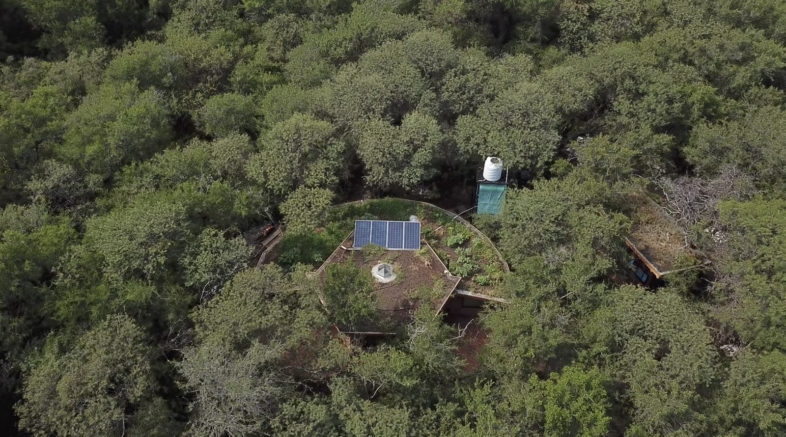
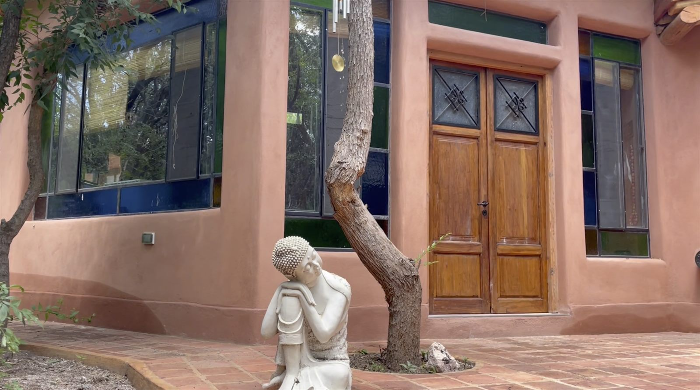
Diseñamos y desarrollamos sistemas donde el agua, la producción y la vivienda funcionan como un todo. Trabajamos en Argentina, Colombia y toda Latinoamérica — de forma presencial o remota.We design and develop systems where water, production and dwelling work as a whole. We work in Argentina, Colombia and across Latin America — in person or remotely.
Se construye sin entender el agua, sin leer el terreno, sin integrar el sistema completo.People build without understanding water, without reading the land, without integrating the whole system.
El resultado:The result:
Primero entendemos el territorio.
Después diseñamos el sistema.First we understand the territory.
Then we design the system.
El agua, el suelo y la topografía dejan de ser un problema — y pasan a ser parte de la solución.Water, soil and topography stop being a problem — and become part of the solution.
Todo pensado como un sistema único.Everything designed as one system.
Captación, infiltración, distribución y fitodepuración. Sistemas vivos que devuelven el agua al territorio.Capture, infiltration, distribution and phytoremediation. Living systems that return water to the territory.
Implantación, diseño y ejecución de obra. Materiales naturales, técnicas adaptadas al lugar.Placement, design and construction. Natural materials, techniques adapted to place.
Organización productiva del terreno: huerta, sistemas agroforestales, integración animal.Productive organization of the land: gardens, agroforestry systems, animal integration.
Diseño paisajístico donde belleza y función conviven. Cada planta, cada espacio, con propósito.Landscape design where beauty and function coexist. Every plant, every space, with purpose.
Visión a largo plazo. El territorio mejora con el tiempo, no se degrada.Long-term vision. The territory improves over time, doesn't degrade.
Si ya tenés diseño y necesitás solo ejecución — lo hacemos. Si querés solo el diseño y vos te encargás de la obra — también. La integralidad es opcional.If you already have a design and only need execution — we do it. If you only want the design and you handle construction — also. Integrality is optional.
Diagnóstico, masterplan, planos. Te entregamos un proyecto completo y vos lo ejecutás con quien quieras.Diagnosis, masterplan, blueprints. We deliver a complete project and you execute it with whoever you choose.
Te acompañamos del primer plano a la última terminación. La forma más completa y coherente.We accompany you from first sketch to final finish. The most complete and coherent path.
Si ya tenés un diseño aprobado, podemos llevar adelante la obra con materiales naturales y técnicas regenerativas.If you already have an approved design, we can lead the construction with natural materials and regenerative techniques.
Encuentros virtuales o visitas in situ. Para resolver dudas, validar decisiones o hacer relevamientos parciales.Virtual meetings or on-site visits. To resolve doubts, validate decisions or do partial assessments.
Lectura del terreno, el agua y tus objetivos. Mapeo aéreo con dron, curvas de nivel, análisis hidrológico, estudio del clima local, relevamiento humano.Reading of land, water and your objectives. Aerial drone mapping, contour lines, hydrological analysis, local climate study, human assessment.
Organización completa del sistema: agua, vivienda, producción, paisaje. Masterplan, zonificación, diseño bioclimático, sistemas productivos diversificados.Full system organization: water, dwelling, production, landscape. Masterplan, zoning, bioclimatic design, diversified productive systems.
Acompañamiento o ejecución completa del proyecto. Dirección de obra, capacitación a quienes habiten el espacio, seguimiento estacional.Accompaniment or complete project execution. Construction direction, training for inhabitants, seasonal follow-up.
Un terreno con un cañadón en el medio suele verse como un problema. En uno de nuestros proyectos, ese mismo cañadón se transformó en el eje del diseño.A piece of land with a gully running through it usually looks like a problem. In one of our projects, that same gully became the core of the design.
A través de terraceos y manejo del agua se logró:Through terracing and water management:
Resultado: un sistema fértil, estable y habitable — donde antes había riesgo.Result: a fertile, stable and habitable system — where before there was risk.
No todas se usan en cada proyecto. Elegimos según el lugar, el clima y los recursos disponibles.Not all are used in every project. We choose based on place, climate and available resources.
Aplicamos cerca de 14 técnicas tradicionales y modernas adaptadas al contexto: adobe crudo, bahareque, fardos de paja, cob, tapia pisada, paja encofrada, cordwood, quincha. Materiales: arcilla, arena, madera, paja — y reciclados: botellas, metal, neumáticos.We apply about 14 traditional and modern techniques: raw adobe, bahareque, straw bales, cob, rammed earth, formed straw, cordwood, quincha. Materials: clay, sand, wood, straw — and recycled: bottles, metal, tyres.
Lectura del territorio, análisis hídrico, estrategias de captación e infiltración. Diseñar desde el agua es diseñar para la vida. El agua estructura ubicación de viviendas, corredores biológicos, huertos y espacios comunitarios.Territory reading, water analysis, capture and infiltration strategies. Designing from water is designing for life. Water structures the location of dwellings, biological corridors, gardens and community spaces.
Técnicas avanzadas de captura, retención y almacenamiento del agua de lluvia. Aplicables a agricultura regenerativa y restauración ecológica. Beneficios: prevención de erosión, almacenamiento hídrico, elevación de napas, reducción del riesgo de incendios.Advanced techniques for rainwater capture, retention and storage. Applied to regenerative agriculture and ecological restoration. Benefits: erosion prevention, water storage, raising water tables, reducing wildfire risk.
Diseño, construcción y mantenimiento. Ecosistemas acuáticos donde belleza y función se combinan: purificación biológica, almacenamiento, riego, biodiversidad. Cada uno con un rol específico en el sistema.Design, construction and maintenance. Aquatic ecosystems where beauty and function combine: biological purification, storage, irrigation, biodiversity. Each with a specific role in the system.
Sistema de plantas y microorganismos que purifica aguas residuales. Reutilizable para riego de huertos, parques y jardines. Genera biodiversidad, hábitat para múltiples especies y mejora microclimática.System of plants and microorganisms that purifies wastewater. Reusable for irrigation of gardens, parks and landscapes. Generates biodiversity, habitat for many species and microclimatic improvement.
Integración de árboles maderables, frutales, arbustos, cultivos y ganado en una misma parcela. Combina sombra, fijación de nitrógeno, producción diversificada y resiliencia ecosistémica.Integration of timber trees, fruit trees, shrubs, crops and livestock in one parcel. Combines shade, nitrogen fixation, diversified production and ecosystemic resilience.
Vida útil extendida, reducción de superficies pavimentadas, oxígeno, absorción de CO₂, regulación térmica del interior. Espacios coloridos y dinámicos en lo exterior.Extended lifespan, less paved surface, oxygen, CO₂ absorption, interior thermal regulation. Colourful and dynamic spaces outside.
Diseño de edificios que incorporan sol, agua, tierra, vegetación y vientos para reducir impacto y costos. Iluminación natural, ventilación cruzada, confort térmico sin tecnología.Building design that incorporates sun, water, earth, vegetation and winds to reduce impact and costs. Natural lighting, cross ventilation, thermal comfort without technology.
Técnica ancestral marroquí de enlucido que produce acabados símil mármol. Impermeabiliza baños y cocinas, dura décadas y embellece con el tiempo.Moroccan ancestral plastering technique producing marble-like finishes. Waterproofs bathrooms and kitchens, lasts decades and beautifies over time.
Arquitectura que dialoga con el lugar — clima, materiales locales, vínculo con el paisaje y quienes lo habitan.Architecture in dialogue with place — climate, local materials, landscape and inhabitants.
Producción alimentaria diversa, sin químicos, integrada al territorio. Suelos vivos, semillas adaptadas, biodiversidad.Diverse, chemical-free food production integrated into the territory. Living soils, adapted seeds, biodiversity.
Proporciones sagradas aplicadas al diseño del hábitat. Espacios que armonizan con los ritmos naturales y humanos.Sacred proportions applied to habitat design. Spaces that harmonize with natural and human rhythms.
Sistemas sin agua que separan sólidos y líquidos para producir abono.Water-free systems separating solids and liquids to produce fertilizer.
Hornos chilenos, estufas rusas. Hasta 80% de aprovechamiento del calor de la leña.Chilean ovens, Russian stoves. Up to 80% efficiency from firewood.
Análisis de radiaciones naturales para identificar zonas saludables.Analysis of natural radiations to identify healthy zones.
Desarrollamos proyectos en Argentina, Colombia y toda Latinoamérica — de forma presencial, remota o combinada.We develop projects in Argentina, Colombia and across Latin America — in person, remote or combined.
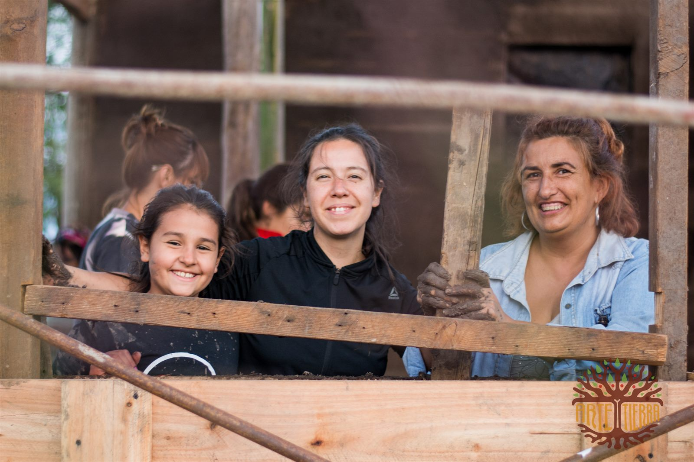
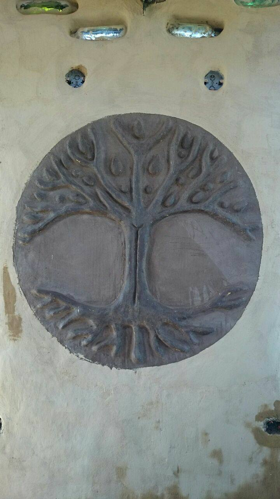
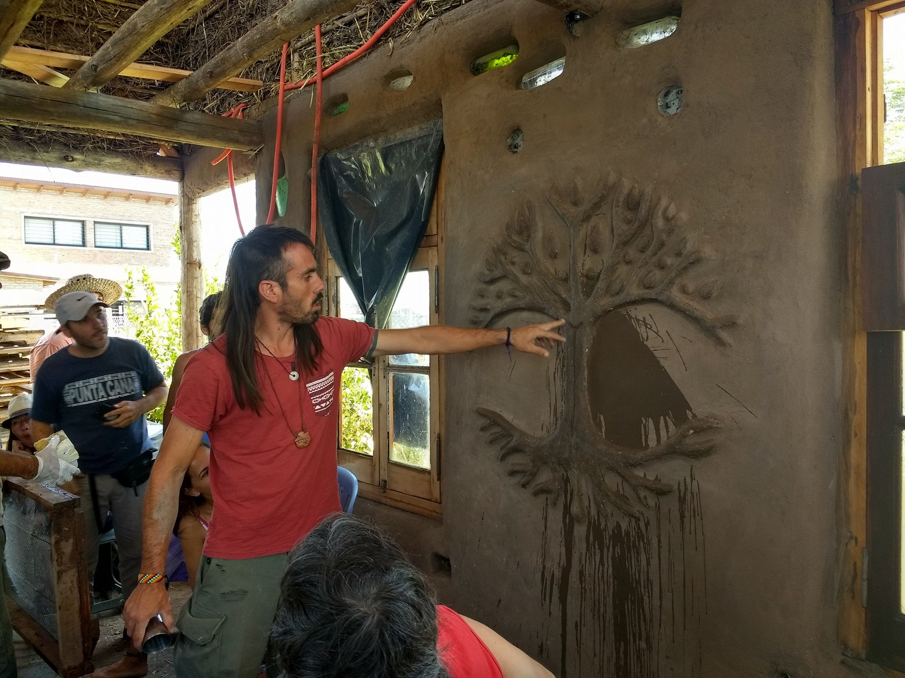
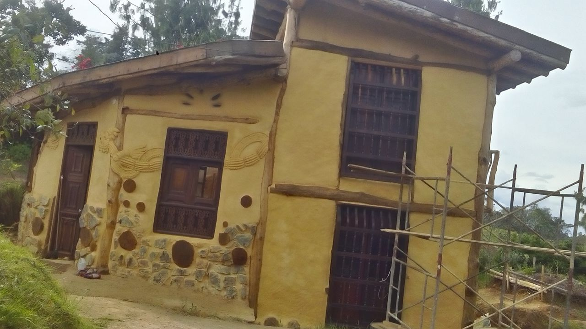
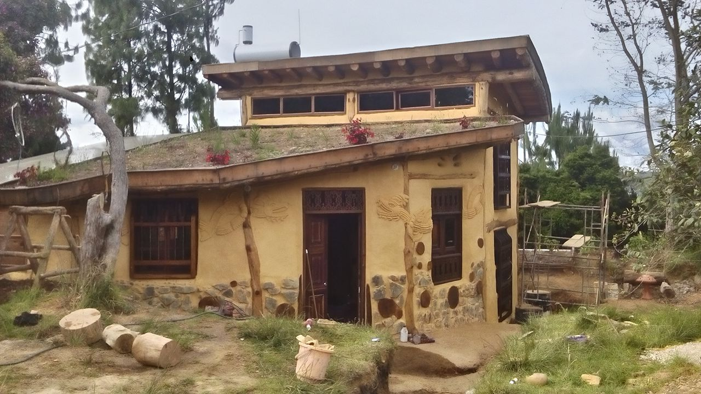
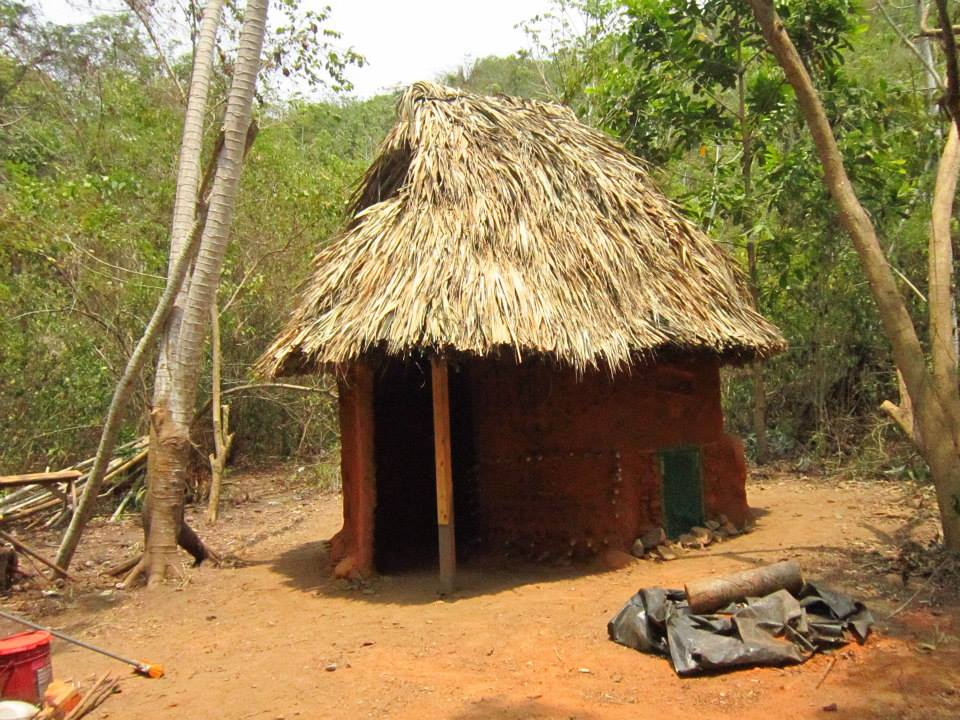
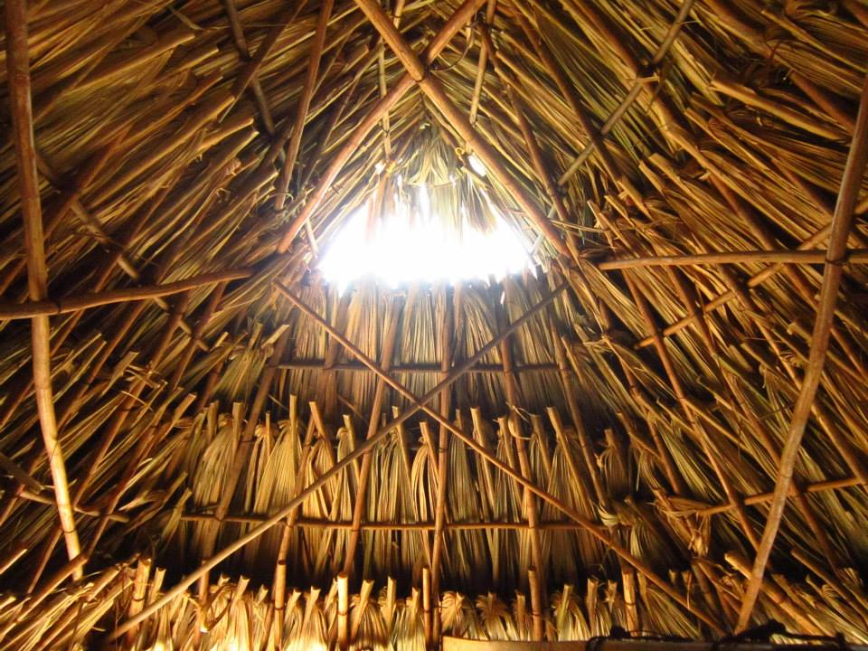
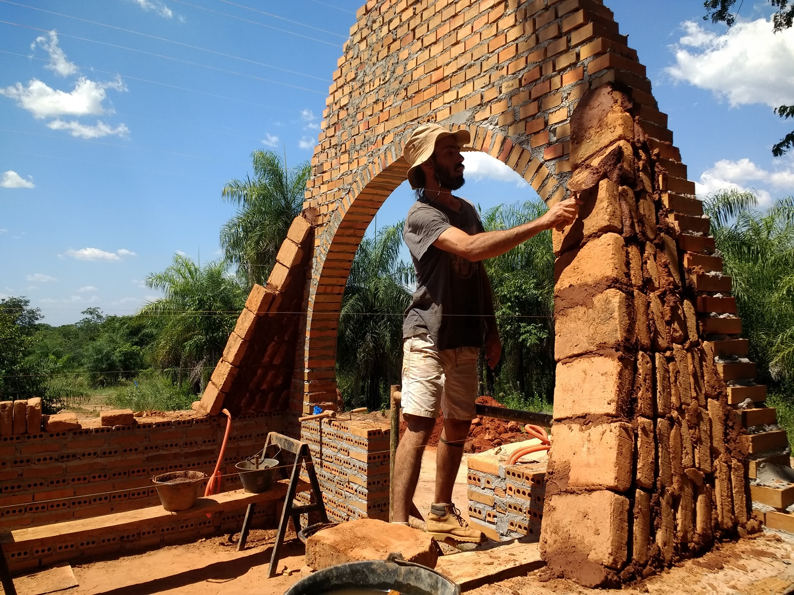
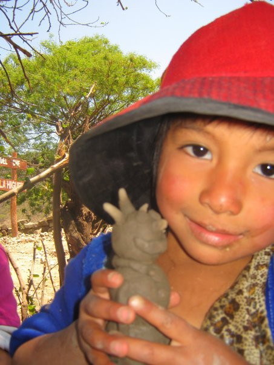
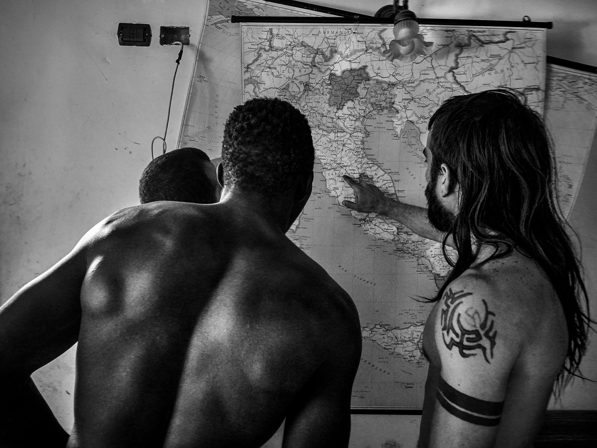
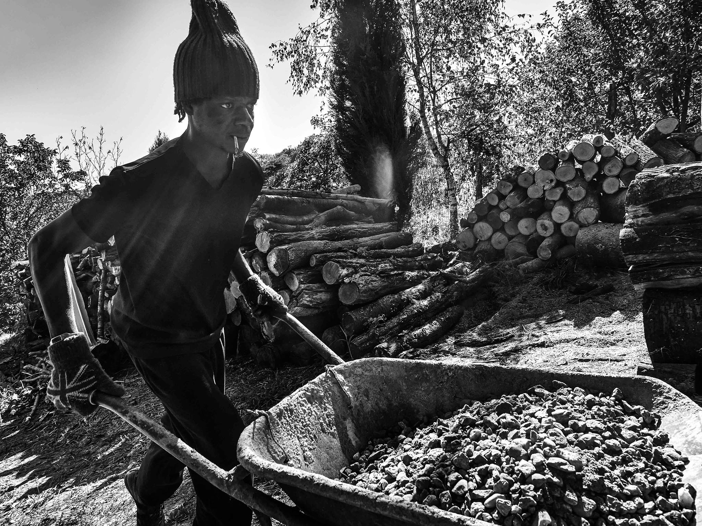
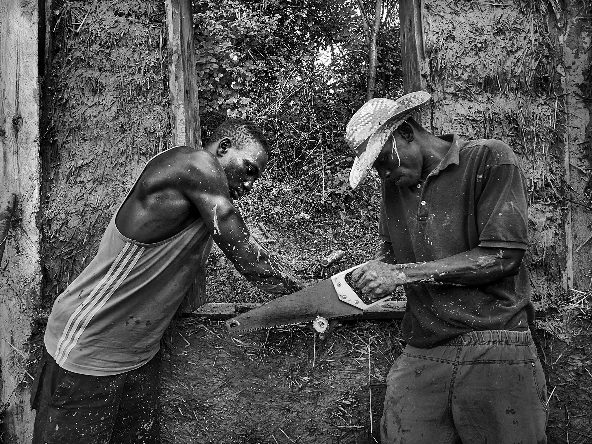
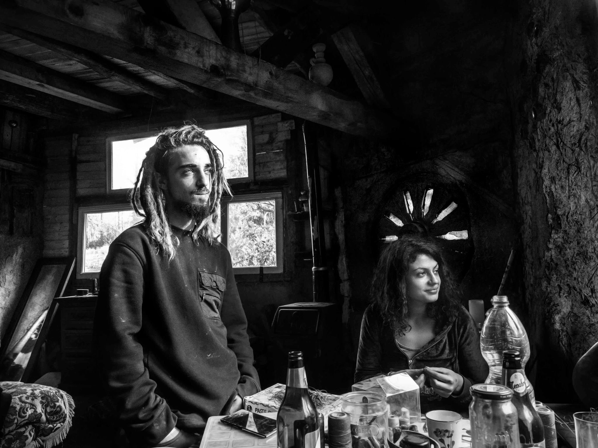
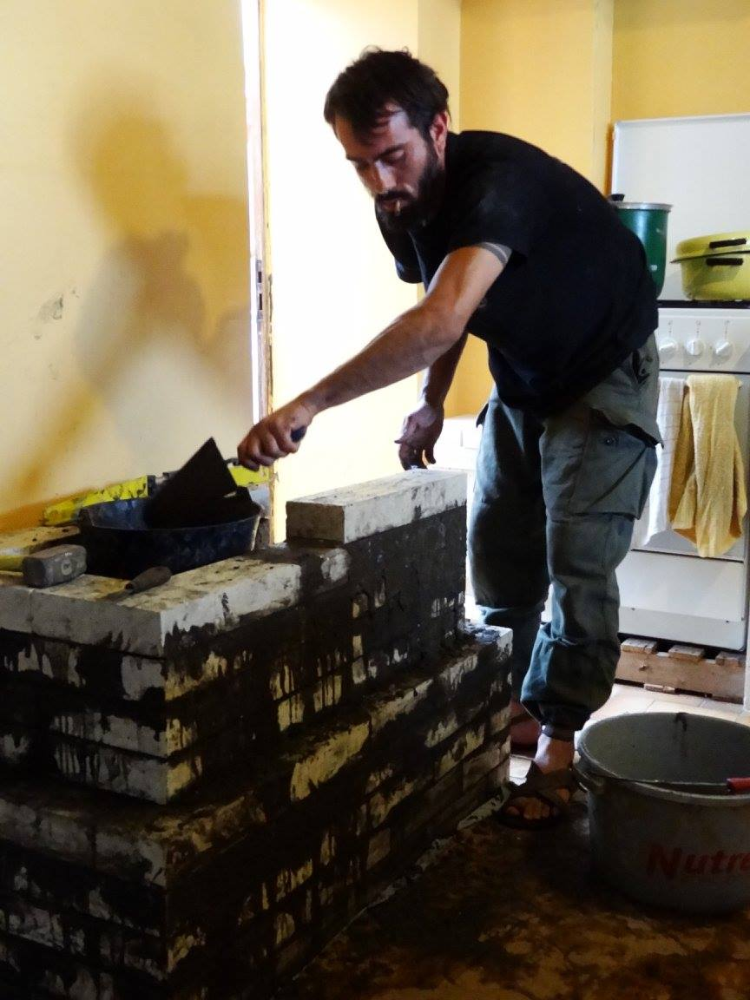
También realizamos encuentros virtuales o visitas in situ programadas según cada proyecto.We also hold virtual meetings or scheduled on-site visits according to each project.
¿Tenés un proyecto en mente pero no sabés por dónde empezar? Asesoría personalizada por videollamada en bioconstrucción, hidrología, bioarquitectura, fitodepuración, permacultura y más.Have a project in mind but don't know where to start? Personalised video-call advisory on bioconstruction, hydrology, bioarchitecture, phytoremediation, permaculture and more.
...este es el momento. Cada decisión inicial define todo lo que viene después....this is the moment. Every early decision defines everything that follows.
Escribinos por WhatsAppWrite to us on WhatsAppo completar el formulario completo →or fill in the complete form →